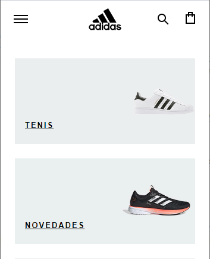

PARC: Alignment
Adidas Mexico
adidas.mx The principle of Alignment help us to give structure and organization to all elements we have in our web sites, there are some types of alignment, but in this example, I could find vertical and horizontal alignments, because there are vertical and horizontal spaces between each image.
PARC: Contrast
SHEIN
shein.com.mxContrast is a very important principle because help us to recognize the foreground and background of a web site, also, it is a way to play with colors, font families and fot sizes, it is important because if we use a bad combination of colors, font sizes or font families, our web site makes unreadable and difficult to navigate. This example show a good combination of colors and font sizes.
White Space and Clean Design
Chevrolet MX
chevrolet.com.mxWhite Space is the name of all empty spaces that we can find in a web site, and a Clean Design helps us to give the best use of that spaces. In this example we can appreciate a great us of this principle, because all empty space makes that each symbol looks simply but also gives an elegant impression.